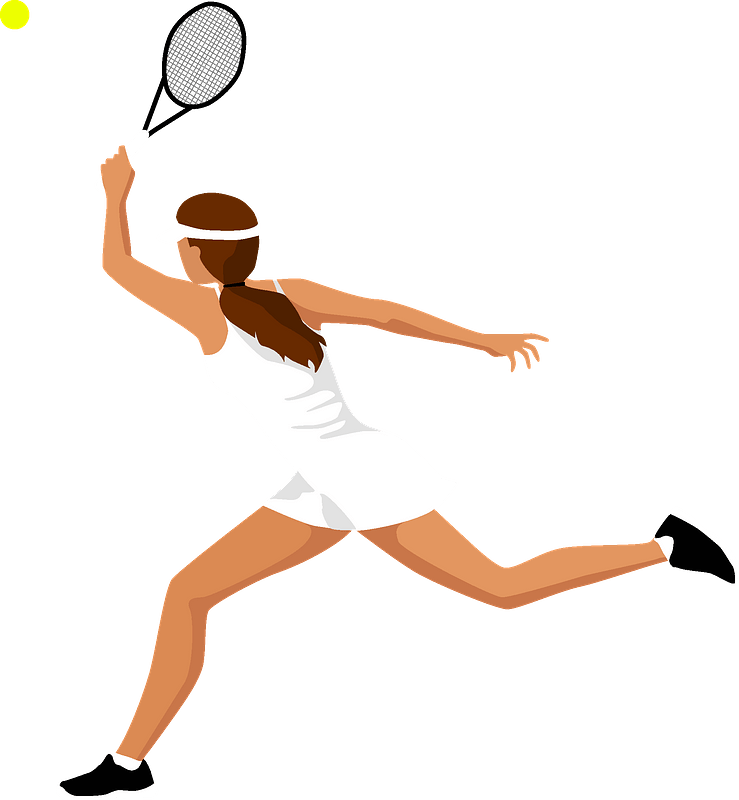
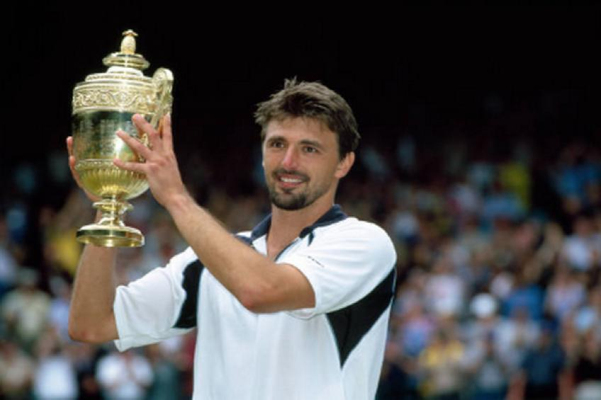
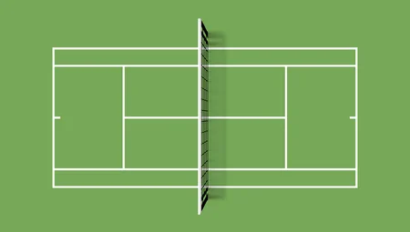

Tenis
Tenis se može igrati pojedinačno 1 na 1 ili u parovima.
Da biste igrali ovu igru potreban vam je reket, loptice i teniski teren. Tenis je igra u kojemu pobjednik mora osvojiti dovoljan broj gemova u odnosu na svog protivnika. Prvo objasnimo što je jedan gem u tenisu? Pričamo o najmanjoj jedinici igre u kojoj igrači osvajaju osnovne poene. Poeni se broje po modelu: 0,15,30,40, gem. Nakon što igrač osvoji poen kada ima 40, on tada osvaja gem. Gem ne osvaja ako je i drugi igrač imao 40 te postigao tu brojku zadnji.
Tada igrač osvaja izjednačenje i onda on mora dobiti idući poen da bi osvojio gem! Pravila tenisa također pričaju o setovima. Set se dobiva kada se osvoji 6 gemova, ali uz uvjet da igrač koji je pobijedio ima dva gema razlike u odnosu na svog protivnika. Ukoliko situacija nije takva, primjerice rezultat je 6: 5, onda se gemovi nastavljaju dok jedan igrač nema dva gema razlike. Pravila tenisa ne određuju do kada se igraju gemovi pa mnogi kritičari tenisa spominju ovaj aspekt pravila.
Izvor
Da biste igrali ovu igru potreban vam je reket, loptice i teniski teren. Tenis je igra u kojemu pobjednik mora osvojiti dovoljan broj gemova u odnosu na svog protivnika. Prvo objasnimo što je jedan gem u tenisu? Pričamo o najmanjoj jedinici igre u kojoj igrači osvajaju osnovne poene. Poeni se broje po modelu: 0,15,30,40, gem. Nakon što igrač osvoji poen kada ima 40, on tada osvaja gem. Gem ne osvaja ako je i drugi igrač imao 40 te postigao tu brojku zadnji.
Tada igrač osvaja izjednačenje i onda on mora dobiti idući poen da bi osvojio gem! Pravila tenisa također pričaju o setovima. Set se dobiva kada se osvoji 6 gemova, ali uz uvjet da igrač koji je pobijedio ima dva gema razlike u odnosu na svog protivnika. Ukoliko situacija nije takva, primjerice rezultat je 6: 5, onda se gemovi nastavljaju dok jedan igrač nema dva gema razlike. Pravila tenisa ne određuju do kada se igraju gemovi pa mnogi kritičari tenisa spominju ovaj aspekt pravila.
Izvor

Hrvatska reprezentacija je na Olimpijskim igrama osvojila 3
medalje. U Barceloni 1992. Goran Ivanišević osvojio je dvije
brončane medalje: u pojedinačnoj konkurenciju i u paru s Goranom
Prpićem.
Treću medalju osvojili su Ivan Ljubičić i Mario Ančić na Igrama u Ateni 2004. godine.
Naš najpozbatiji Tenisać je Goran Ivanišević
Wikipedija
Treću medalju osvojili su Ivan Ljubičić i Mario Ančić na Igrama u Ateni 2004. godine.
Naš najpozbatiji Tenisać je Goran Ivanišević
Wikipedija

Tenis se igra na pravokutnoj površini, najčešće travi, glini ili betonskoj podlozi. Igralište je dugačko 23,78 m i široko 10, 97 m. Za igru koju igraju pojedinci upotrebljava se samo 8.23 m širine igrališta. Tenisač servira iz udaljenosti 6,40 m od mreže. Kako bi igrači imali dovoljno prostora za trčanje za loptom, cjelokupna dužina površine na kojoj se igra tenis iznosi 36,70 m i prostire se 18,30 m u širinu. Zanimljivo da mreža, koja igralište dijeli na dva potpuno jednaka dijela, na rubovima seže u visinu od 1.07 m, a na sredini samo 0,914 m..
izvor
